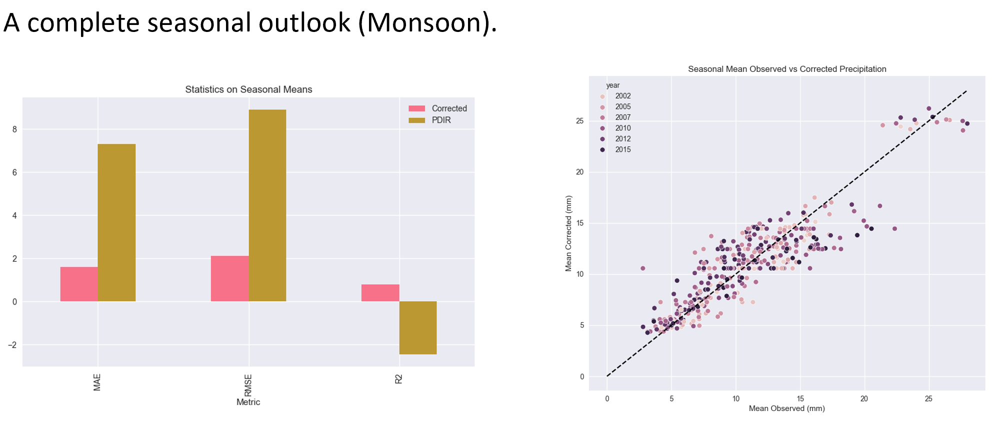
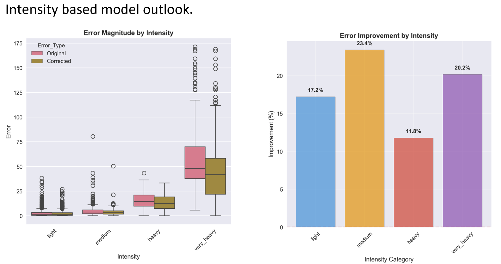

Overview
This project, conducted in collaboration with Dr. Kuo-Lin-Hsu at UC Irvine, aimed to improve the accuracy of the Precipitation Estimation from Remotely Sensed Information using Artificial Neural Networks (PERSIANN) Dynamic Infrared Rain Rate (PDIR) dataset for hydrological applications in Nepal. By addressing biases in satellite-based precipitation estimates, the project enhances the reliability of PDIR data for light and medium rainfall, with ongoing efforts to improve performance for extreme events.
Methodology
- Data Sources: Utilized PDIR satellite precipitation data (4 km × 4 km resolution) and ground-based gauge observations from Nepal’s Department of Hydrology and Meteorology (2020–2024).
- Machine Learning Approach: Employed Random Forest regression to model biases, incorporating topographical parameters (slope, aspect, elevation) derived from SRTM Digital Elevation Models.
- Bias Correction: Compared PDIR pixel values with gauge observations at corresponding locations to quantify and correct systematic errors.
- Validation: Assessed model performance across seasons, achieving improved accuracy for light (0–10 mm/day) and medium (10–50 mm/day) precipitation.
Results
- Achieved a good reduction in Mean Absolute Error for all precipitation events compared to raw PDIR data.
- Strong seasonal performance, particularly during monsoon months (June–September).
- Challenges remain in correcting extreme rainfall events (>50 mm/day) due to PDIR’s coarse resolution and limited sensitivity to localized storms.
- Ongoing work focuses on integrating higher-resolution satellite data and advanced deep learning models.
Significance
This project improves the reliability of satellite precipitation data for hydrological modeling in data-scarce regions like Nepal, where ground-based observations are limited. Accurate precipitation estimates are critical for flood forecasting, drought monitoring, and irrigation planning, supporting sustainable water management in South Asia.
Visuals
Figure: Comparison of raw vs. corrected PDIR precipitation on a Seasonal scale for a monsoon event in Nepal .
Figure: Comparison of raw vs. corrected PDIR precipitation for different intensities.
Future Work
- Refine corrections for high-intensity rainfall using higher-resolution datasets (e.g., GPM IMERG).
- Explore deep learning techniques, such as Convolutional Neural Networks, to capture spatial patterns in precipitation biases.
- Submit findings for peer review to a journal like Journal of Hydrology.